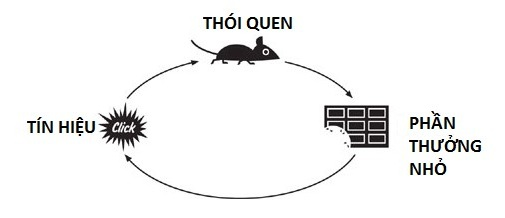

Vòng lặp thói quen

Thói quen không hình thành một cách ngẫu nhiên mà thường tuân theo một cấu trúc lặp lại: tín hiệu (cue) <-> hành động (routine) <-> phần thưởng (reward).
Hiểu được cơ chế này giúp chúng ta xây dựng những thói quen tích cực và thay đổi những hành vi chưa mong muốn.
Tín hiệu là yếu tố khởi đầu, đóng vai trò như “công tắc” kích hoạt hành vi. Đó có thể là một thời điểm trong ngày, một cảm xúc, một địa điểm hoặc một tình huống quen thuộc.
Ví dụ, cảm giác buồn chán có thể là tín hiệu khiến bạn cầm điện thoại lên lướt mạng.
Sau tín hiệu là hành động — phần cốt lõi của thói quen. Đây là việc bạn thực sự làm, như uống cà phê mỗi sáng, tập thể dục hoặc kiểm tra tin nhắn liên tục.
Hành động càng lặp lại nhiều lần sau cùng một tín hiệu, nó càng trở nên tự động và ít cần suy nghĩ.
Cuối cùng là phần thưởng — yếu tố củng cố thói quen. Phần thưởng có thể là cảm giác dễ chịu, sự thư giãn hoặc cảm giác hoàn thành. Chính phần thưởng khiến não bộ “ghi nhớ” rằng hành động này đáng lặp lại trong tương lai.
Nếu không có phần thưởng đủ hấp dẫn, thói quen khó duy trì lâu dài.
Điểm quan trọng là ba yếu tố này liên kết chặt chẽ với nhau. Khi tín hiệu xuất hiện, não bộ dự đoán phần thưởng và thúc đẩy bạn thực hiện hành động.
Qua thời gian, vòng lặp này trở nên mạnh mẽ và tự động hơn, tạo thành thói quen bền vững.
Để xây dựng thói quen tốt, ta có thể chủ động thiết kế vòng lặp. Chẳng hạn, đặt sách ở đầu giường (tín hiệu), đọc vài trang mỗi tối (hành động), và tận hưởng cảm giác thư giãn hoặc tiến bộ (phần thưởng).
Ngược lại, để loại bỏ thói quen xấu, ta có thể thay đổi tín hiệu hoặc thay thế hành động bằng một lựa chọn tích cực hơn.
Tóm lại, thói quen không phải là vấn đề ý chí đơn thuần mà là kết quả của một hệ thống lặp lại.
Khi hiểu và điều chỉnh được vòng lặp tín hiệu – hành động – phần thưởng, chúng ta có thể xây dựng những thói quen bền vững và cải thiện cuộc sống một cách lâu dài.